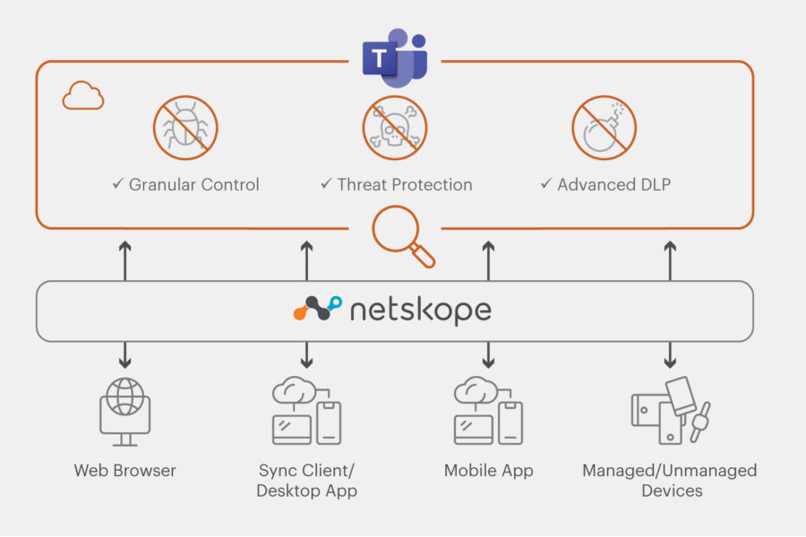

CASB (Cloud Access Security Broker)
Permite identificar y controlar los riesgos de seguridad en aplicaciones en la nube.
Soluciones de ciberseguridad y protección de datos en la nube.
Permite identificar y controlar los riesgos de seguridad en aplicaciones en la nube.
Protege la navegación web frente a sitios maliciosos y amenazas en tiempo real.
Fecha de publicación: .
Netskope añade nuevas capacidades para prevenir la fuga de datos.
